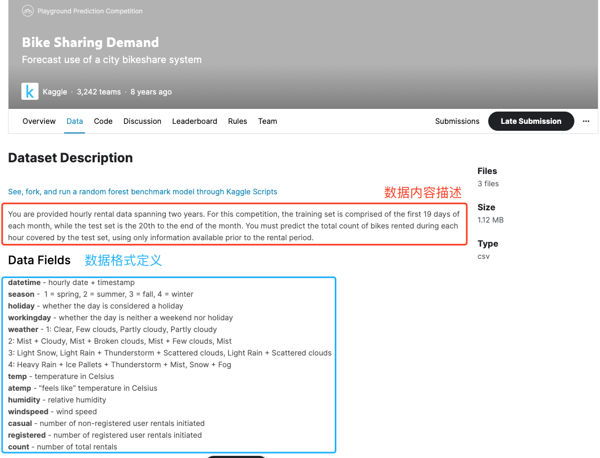
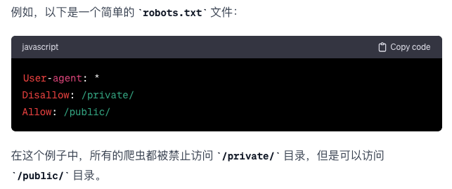

2.数据抽取（采集、获取方式）
2.1 互联网数据采集
2.1.1 获取网页 P84
在网页获取中我们需要用到两个库，一个是requests来获得网页源代码（html），然后通过bs4库对源代码（html）进行解析。
示例代码
import requests
url = "https://www.baidu.com/" #网址赋值
html = requests.get(url) #用GET方法获取网页数据
html.encoding = "utf-8" #设定网页编码方式：utf-8
print(html.text) #输出结果
输出结果
<!DOCTYPE html>
<!--STATUS OK--><html> <head><meta http-equiv=content-type content=text/html;charset=utf-8><meta http-equiv=X-UA-Compatible content=IE=Edge><meta content=always name=referrer><link rel=stylesheet type=text/css href=https://ss1.bdstatic.com/5eN1bjq8AAUYm2zgoY3K/r/www/cache/bdorz/baidu.min.css><title>百度一下，你就知道</title></head> <body link=#0000cc> <div id=wrapper> <div id=head> <div class=head_wrapper> <div class=s_form> <div class=s_form_wrapper> <div id=lg> <img hidefocus=true src=//www.baidu.com/img/bd_logo1.png width=270 height=129> </div> <form id=form name=f action=//www.baidu.com/s class=fm> <input type=hidden name=bdorz_come value=1> <input type=hidden name=ie value=utf-8> <input type=hidden name=f value=8> <input type=hidden name=rsv_bp value=1> <input type=hidden name=rsv_idx value=1> <input type=hidden name=tn value=baidu><span class="bg s_ipt_wr"><input id=kw name=wd class=s_ipt value maxlength=255 autocomplete=off autofocus=autofocus></span><span class="bg s_btn_wr"><input type=submit id=su value=百度一下 class="bg s_btn" autofocus></span> </form> </div> </div> <div id=u1> <a href=http://news.baidu.com name=tj_trnews class=mnav>新闻</a> <a href=https://www.hao123.com name=tj_trhao123 class=mnav>hao123</a> <a href=http://map.baidu.com name=tj_trmap class=mnav>地图</a> <a href=http://v.baidu.com name=tj_trvideo class=mnav>视频</a> <a href=http://tieba.baidu.com name=tj_trtieba class=mnav>贴吧</a> <noscript> <a href=http://www.baidu.com/bdorz/login.gif?login&tpl=mn&u=http%3A%2F%2Fwww.baidu.com%2f%3fbdorz_come%3d1 name=tj_login class=lb>登录</a> </noscript> <script>document.write('<a href="http://www.baidu.com/bdorz/login.gif?login&tpl=mn&u='+ encodeURIComponent(window.location.href+ (window.location.search === "" ? "?" : "&")+ "bdorz_come=1")+ '" name="tj_login" class="lb">登录</a>');
</script> <a href=//www.baidu.com/more/ name=tj_briicon class=bri style="display: block;">更多产品</a> </div> </div> </div> <div id=ftCon> <div id=ftConw> <p id=lh> <a href=http://home.baidu.com>关于百度</a> <a href=http://ir.baidu.com>About Baidu</a> </p> <p id=cp>©2017 Baidu <a href=http://www.baidu.com/duty/>使用百度前必读</a> <a href=http://jianyi.baidu.com/ class=cp-feedback>意见反馈</a> 京ICP证030173号 <img src=//www.baidu.com/img/gs.gif> </p> </div> </div> </div> </body> </html>
2.1.2 网页解析 P85
在2.1.1中我们看到已经可以获取到网页的数据，但是数据比较杂乱，这时候我们需要专门的工具对这些数据进行整理分析。
beautifulsoup使用参考文档:
https://beautifulsoup.readthedocs.io/zh_CN/v4.4.0/index.html#id13
示例代码
#整理网页
import requests
from bs4 import BeautifulSoup
url = "https://www.baidu.com" #网址赋值
html = requests.get(url) #用GET方法获取网页数据
html.encoding = "utf-8" #设定网页编码方式：utf-8
#---------new code here--------
soup = BeautifulSoup(html.text,'html.parser') #建立soup对象，获取网页源代码
print(soup.prettify()) #将网页源代码排版整理输出，以便观察相关结果
输出结果
<!DOCTYPE html>
<!--STATUS OK-->
<html>
<head>
<meta content="text/html;charset=utf-8" http-equiv="content-type"/>
<meta content="IE=Edge" http-equiv="X-UA-Compatible"/>
<meta content="always" name="referrer"/>
<link href="https://ss1.bdstatic.com/5eN1bjq8AAUYm2zgoY3K/r/www/cache/bdorz/baidu.min.css" rel="stylesheet" type="text/css"/>
<title>
百度一下，你就知道
</title>
</head>
<body link="#0000cc">
<div id="wrapper">
<div id="head">
<div class="head_wrapper">
<div class="s_form">
<div class="s_form_wrapper">
<div id="lg">
<img height="129" hidefocus="true" src="//www.baidu.com/img/bd_logo1.png" width="270"/>
</div>
<form action="//www.baidu.com/s" class="fm" id="form" name="f">
<input name="bdorz_come" type="hidden" value="1"/>
<input name="ie" type="hidden" value="utf-8"/>
<input name="f" type="hidden" value="8"/>
<input name="rsv_bp" type="hidden" value="1"/>
<input name="rsv_idx" type="hidden" value="1"/>
<input name="tn" type="hidden" value="baidu"/>
<span class="bg s_ipt_wr">
<input autocomplete="off" autofocus="autofocus" class="s_ipt" id="kw" maxlength="255" name="wd" value=""/>
</span>
<span class="bg s_btn_wr">
<input autofocus="" class="bg s_btn" id="su" type="submit" value="百度一下"/>
</span>
</form>
</div>
</div>
<div id="u1">
<a class="mnav" href="http://news.baidu.com" name="tj_trnews">
新闻
</a>
<a class="mnav" href="https://www.hao123.com" name="tj_trhao123">
hao123
</a>
<a class="mnav" href="http://map.baidu.com" name="tj_trmap">
地图
</a>
<a class="mnav" href="http://v.baidu.com" name="tj_trvideo">
视频
</a>
<a class="mnav" href="http://tieba.baidu.com" name="tj_trtieba">
贴吧
</a>
<noscript>
<a class="lb" href="http://www.baidu.com/bdorz/login.gif?login&tpl=mn&u=http%3A%2F%2Fwww.baidu.com%2f%3fbdorz_come%3d1" name="tj_login">
登录
</a>
</noscript>
<script>
document.write('<a href="http://www.baidu.com/bdorz/login.gif?login&tpl=mn&u='+ encodeURIComponent(window.location.href+ (window.location.search === "" ? "?" : "&")+ "bdorz_come=1")+ '" name="tj_login" class="lb">登录</a>');
</script>
<a class="bri" href="//www.baidu.com/more/" name="tj_briicon" style="display: block;">
更多产品
</a>
</div>
</div>
</div>
<div id="ftCon">
<div id="ftConw">
<p id="lh">
<a href="http://home.baidu.com">
关于百度
</a>
<a href="http://ir.baidu.com">
About Baidu
</a>
</p>
<p id="cp">
©2017 Baidu
<a href="http://www.baidu.com/duty/">
使用百度前必读
</a>
<a class="cp-feedback" href="http://jianyi.baidu.com/">
意见反馈
</a>
京ICP证030173号
<img src="//www.baidu.com/img/gs.gif"/>
</p>
</div>
</div>
</div>
</body>
</html>
抓取title属性示例代码
注意：一定要先运行上面代码！！再运行本行代码！！！！
#使用select方法，抓取相关属性
select_data = soup.select("title") #这里我们选择title
print(select_data) #输出抓取结果
输出结果
[<title>百度一下，你就知道</title>]
2.1.3 数据存储 P85
注意：一定要先运行上面代码！！再运行本行代码！！！！
示例代码
import time #导入时间库
'''前期数据准备、文件路径、数据预处理'''
file_path = './html_solve.txt' #文件路径
localtime = time.asctime(time.localtime(time.time()))#加入时间戳
write_string = str(select_data) + localtime + '\n'
'''
write data 将数据写入文件
mode = "a+" 模式:
开一个文件用于读写。
如果该文件已存在，文件指针将会放在文件的结尾。文件打开时会是追加模式。
如果该文件不存在，创建新文件用于读写。
'''
with open(file_path, mode = "a+") as file:
file.write(write_string)
file.close
#end with
'''open file to check data'''
with open(file_path) as file_object:
data = file_object.read()
print(data)
#end with
输出结果
[<script>document.write('<a href="http://www.baidu.com/bdorz/login.gif?login&tpl=mn&u='+ encodeURIComponent(window.location.href+ (window.location.search === "" ? "?" : "&")+ "bdorz_come=1")+ '" name="tj_login" class="lb">登录</a>');
[<script>document.write('<a href="http://www.baidu.com/bdorz/login.gif?login&tpl=mn&u='+ encodeURIComponent(window.location.href+ (window.location.search === "" ? "?" : "&")+ "bdorz_come=1")+ '" name="tj_login" class="lb">登录</a>');
</script>]Wed Nov 30 22:54:37 2022
[<script>document.write('<a href="http://www.baidu.com/bdorz/login.gif?login&tpl=mn&u='+ encodeURIComponent(window.location.href+ (window.location.search === "" ? "?" : "&")+ "bdorz_come=1")+ '" name="tj_login" class="lb">登录</a>');
</script>]Wed Nov 30 22:56:27 2022
[<title>百度一下，你就知道</title>]Wed Nov 30 22:57:41 2022
2.2 下载开源数据集（本次活动数据集来源）
本次活动我们主要通过下载开源数据集的方式来获取数据，既然是通过网站上下载的数据集，那么我们就需要查看下载网站上给出的数据相关内容说明和格式说明，以便我们用正确的方式来打开和分析数据。
如下图所示，这是某个网站上的开源数据，分别对数据内容和格式进行详细说明。 
2.2.1 数据内容说明
数据中包含某一年的某市某一区域内共享单车的每一次的租赁情况，期中包括时间、日期、月份、地点、天气等相关数据。
数据总量：1509922条
数据样式如图所示：

2.2.2 数据格式说明
index 索引
bike_id 车辆编号
datetime 时间（格式：hh:mm:ss）
date 日期
month 月份
season 季节
workingday 工作日（是：Yes，否：No）
localhost 所在位置
weather 天气
isdaytime 是否白天（白天：True，晚上：False）
temp_value 温度数值
temp_unit 温度单位
wind_speed 风速
wind_unit 风速单位